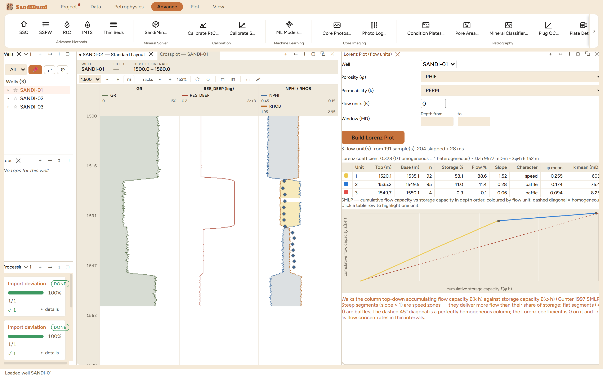

The Lorenz pane walks one well's column top-down, accumulating flow
capacity Σ(k·h) against storage capacity Σ(φ·h),
and segments the curve into flow units: the stratigraphic modified Lorenz
plot. Reach for it when the question is where the flow actually lives:
which interval a completion must not miss, whether a thief zone exists,
and how heterogeneous the column is in one number.
The pane

SANDI-01 from PHIE and PERM: Lorenz coefficient 0.328, three
flow units, and the SMLP curve with the upper sand's speed segment
climbing away from the dashed homogeneous diagonal.
Per well, from curves: pick the porosity and permeability
curves (core-calibrated PERM here), optionally cap the unit count or
restrict the depth window.
The footer states the reading rules: slope > 1
segments are speed zones delivering more flow than their share of
storage, flat segments are baffles, the dashed 45° diagonal is a
perfectly homogeneous column, and the Lorenz coefficient runs 0
(homogeneous) to 1 (all flow in thin intervals).
Step by step
Open the pane (workspace ＋ menu ▸ Lorenz Plot), pick
the well and the two curves, and press Build Lorenz Plot.
Read the header accounting first: 3 flow units from 191 samples with
204 skipped here, and skipped means a sample missing either input,
counted rather than silently absorbed.
Click a table row to highlight its segment on the curve.
Reading the result
The example column tells one clear story: the upper sand
(1520–1535 m) holds 58.1% of the storage but delivers 88.6% of
the flow at slope 1.52, while everything below it is baffle (slopes 0.28
and 0.06). A completion that perforates only the top unit produces almost
nine-tenths of the well; one that relies on the lower interval waits on
75 mD rock. The Lorenz coefficient of 0.328 places the column in the
moderately heterogeneous range, and Σk·h (9,577 mD·m)
is the kh a test should roughly confirm.
QC and pitfalls
The plot is only as good as the permeability curve. Built
from an uncalibrated transform it restates that transform's
assumptions; use the core-tied curve and say which one was used.
Depth order matters. The SMLP accumulates in stratigraphic
order on purpose, so unit boundaries are depths a completion can use;
a sorted (classic Lorenz) curve answers heterogeneity only.
Compare wells at the same cutoffs. Skipped-sample counts
differ per well; a coefficient computed over different fractions of
two columns is not one comparison.